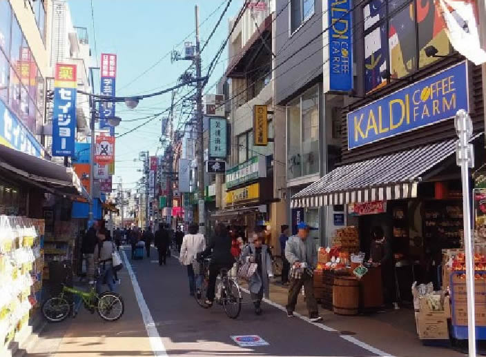
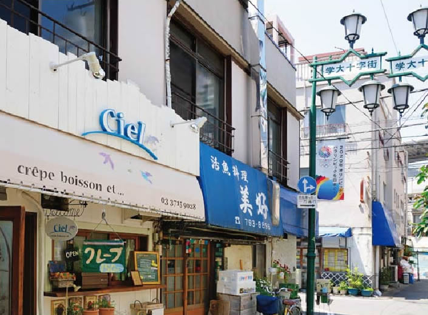
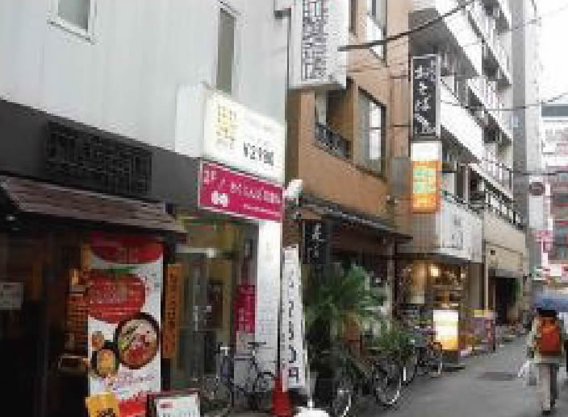
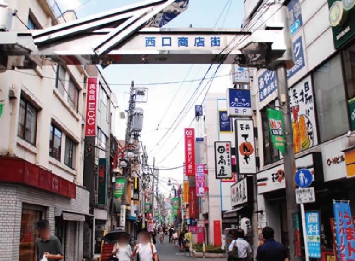
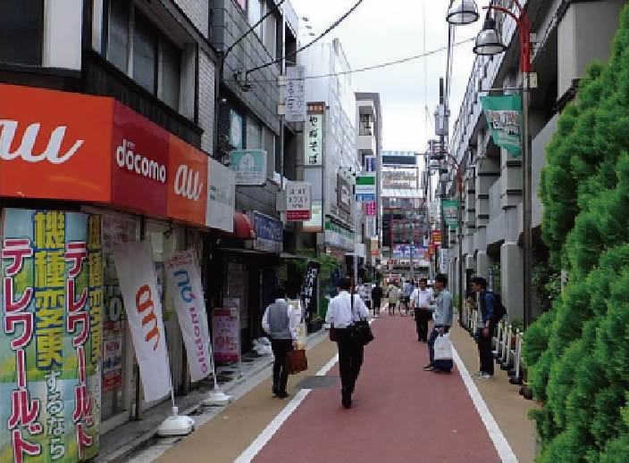
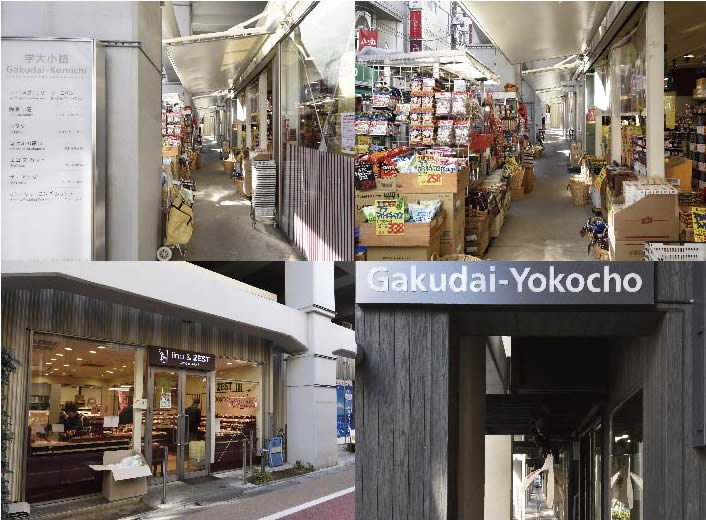

碑文谷公園をはじめ、田向公園や中央緑地公園と周辺には、都会ながらも緑が充実し潤いが感じられます。
駅を降りると東西に商店街が広がりお洒落なカフェをはじめ
セレクトショップなどで賑わいと活気に満ちあふれ住まうのが楽しくなる街。
近隣には、イオンスタイル碑文谷やスーパーオオゼキがあり、日常生活も快適です。
水や緑に囲まれた深呼吸が
気持ちの良いスポットが充実。
碑文谷公園
目黒区の区立公園。公園の真ん中にある弁天池には、ボート場があり土日・祝日は、有料でボート遊びが楽しめます。他にもウサギやモルモット・犬などと触れ合うことができ、引き馬・ポニー教室（有料）が「こども動物広場」にあります。また、地域の方々やボランティアの手によって、北側の小公園やバラ花壇、池脇の花壇は、美しく手入れされており公園利用者を楽しませてくれています。
■住所：目黒区碑文谷六丁目9番11号
■開園時間：午前6時~午後9時まで
※北側の体育館・野球場・テニスコートがある公園部分のみ夜間は、閉鎖します。
隣には、生活必需品がすぐに手に入るスーパーもあります。
イオンスタイル碑文谷
徒歩1分の距離に立地。食料品から日用品まで揃っているので、急な来客でも食材や調味料が足りなくなっても大丈夫。大きな買い物もこの距離なら楽々！！
渋谷と横浜を結ぶ東急東横線。
魅力がいっぱいの「代官山」「中目黒」「自由が丘」へダイレクトアクセス。
お洒落で話題豊富な街に気軽に出掛けられます。
-

学芸大学東口商店街
山の手に位置しながらも下町人情あふれるアットホームな商店街。春と秋に感謝祭はあり、お米の詰め放題や生活応援品をプレゼント！8月は納涼祭、12月はサンタ餅つきなど駅前イベントやフリーマーケットも盛んに行われています。
-

学大十字街商店街
学芸大学駅東口商店街を100ｍ歩いて左側に十字街の街路灯があり、数年前まではそれぞれの名前入りちょうちんがある飲み屋横丁で学大では、飲食店が密集する所では、もっとも古くからある商店街です。
-

鷹番三丁目本通り商店街
普段使いできる美味しいお店からおしゃれな雑貨店まで多彩な店舗が充実しています。また、エコロジーを大切にした商店街の取り組みを行っており、参加店舗が決めた取り組みにご協力いただいた場合にエコポイントを差し上げています。
-

学芸大学西口商店街
学芸大学駅の改札を出て左方向に広がる商店街で、メディアで紹介されるお店や老舗からチェーン店まで新旧の飲食店、コンビニエンスストア、銀行などが軒を連ねる賑やかな商店街です。
-

学芸大学公園通り商栄会
東急線の高架沿い西側の通りにあり、一般店舗だけで形成されている。飲食店が多く、西口側に比べて地味な雰囲気だけど懐かしさが漂う商店会。街灯が緑とピンクのデザインでかわいらしさもあり、通りを南下すると碑文谷公園方面に行けます。
-

東急ショッピングコリドール会
東急線の高架下にあり、2階までが店舗委空間となっている。名店街・味覚街・百味街などのいくつかの区画に分かれており高架下としては規模が大きい。市場としての雰囲気もあり、飲食街としての風景もあり多彩で駅側で利便性の高い商店街です。※2012年現在は、建て替わり「GAKUDAI KOUKASHITA」となっている。

「目黒」駅から「都立大学」駅にかけての目黒通りは、
約60店舗のインテリアショップが立ち並んでいることからインテリアストリートと呼ばれています。
ACME Furniture
JOURNAL STANDARDなどを展開するベイクルーズグループの家具ブランドです。1960年~70年代のアメリカヴィンテージ家具を中心にセレクトされています。また、時代のトレンドを取り入れた様々なコーディネートもご提案。専門職員によるメンテナンス対応を行っています。
- 店舗情報
- 住所：目黒区目黒3-9-7 電話：03-5720-1071
営業時間：11:00~20:00 定休日：不定休
現地より約2,510ｍ（徒歩32分）
POINT No.38
アンティーク家具とビンテージ自転車のお店「Point No.39」の姉妹店。1900年代初頭から70年代のランプやビンテージの雰囲気をそのまま取り込んだオリジナルランプが並びます。アンティーク家具や雑貨・ペンダントタイプやシャンデリアなどの照明は、ショップディスプレイからご自宅用まで、幅広くお使い頂く事が出来ます。
- 店舗情報
- 住所：目黒区下目黒4-11-22 電話：03-6452-4620
営業時間：12:00~20:00 定休日：水曜日
現地より約1,840ｍ（徒歩23分）
brunch+one
「多樹種から選ぶ、こだわりのインテリア」をテーマに商品を取り扱っているbrunch＋one。店内はブラックチェリーをメインに多数の樹種の商品が展示され、国内外のデザイナーズ商品から、近年人気のあるLDセットまで、幅広いニーズに答えるアイテムが揃います。
- 店舗情報
- 住所：目黒区目黒4-10-8 電話:03-5725-5050
営業時間：11:00~19:00
現地より約2,100ｍ（徒歩27分）
暮らしを豊かにする生活環境。
- 1イオンスタイル碑文谷
約10ｍ（徒歩1分） - 2スーパーオオゼキ碑文谷店
約130ｍ（徒歩2分） - 3ABCマート
約240ｍ（徒歩3分） - 4ローソン柿の木坂店
約330ｍ（徒歩5分） - 5セブンイレブン碑文谷三丁目店
約420ｍ（徒歩6分） - 6PCデポスマートライフ碑文谷店
約600ｍ（徒歩8分） - 7都立大学東急ストア
約800ｍ（徒歩10分）
- 8ココカラファイン学芸大学駅前店
約860ｍ（徒歩11分） - 9東急ストア学芸大学店
約870ｍ（徒歩11分） - 10ツルハドラッグ都立大学店
約880ｍ（徒歩11分） - 11サンドラッグ学芸大学店
約890ｍ（徒歩12分）） - 12マツモトキヨシ学芸大学東口店
約910ｍ（徒歩12分） - 13肉のハナマサ都立大学店
約920ｍ（徒歩12分） - 14TSUTAYA学芸大学店
約960ｍ（徒歩12分）
- 1フィットネスクラブ
アトリオドゥーエ碑文谷
約200ｍ（徒歩3分） - 2スイング碑文谷
約240ｍ（徒歩3分） - 3田向公園
約350ｍ（徒歩5分） - 4すずめのお宿緑地公園
約430ｍ（徒歩6分） - 5碑文谷公園
約440ｍ（徒歩6分）
- 6サレジオ教会
約540ｍ（徒歩7分） - 7碑文谷八幡宮
約600ｍ（徒歩8分） - 8コナミスポーツクラブ
約610ｍ（徒歩8分） - 9立会川緑道
約870ｍ（徒歩11分） - 10清水池公園
約950ｍ（徒歩12分）
- 1区立大岡山小学校（通学区）
約880ｍ（徒歩11分） - 2区立第八中学校（通学区）
約340ｍ（徒歩5分） - 3第三ひもんや保育園
約250ｍ（徒歩4分） - 4ひもんや保育園
約480ｍ（徒歩6分） - 5目黒区小規模認可保育園BabyOne
約500ｍ（徒歩7分） - 6こどもヶ丘保育園
約640ｍ（徒歩8分） - 7第二ひもんや保育園
約660ｍ（徒歩9分）
- 8日出幼稚園
約730ｍ（徒歩10分） - 9碑文谷教会付属幼稚園
約820ｍ（徒歩11分） - 10円融寺幼稚園
約840ｍ（徒歩11分） - 11区立鷹番保育園
約840ｍ（徒歩11分） - 12目黒サレジオ幼稚園
約610ｍ（徒歩8分） - 13トキワ松学園
約240ｍ（徒歩3分） - 14目黒星美学園小学校
約550ｍ（徒歩7分）
- 1芳賀歯科医院
約80ｍ（徒歩1分） - 2前田歯科医院
約200ｍ（徒歩3分） - 3ひもんや外科内科クリニック
約330ｍ（徒歩5分） - 4ひもんや内科消化器科診療所
約370ｍ（徒歩5分） - 5梶産婦人科医院
約400ｍ（徒歩5分） - 6坂上耳鼻咽喉科医院
約440ｍ（徒歩6分）
- 7藤田医院
約460ｍ（徒歩6分） - 8目黒通りハートクリニック
約530ｍ（徒歩7分） - 9鷹番休日診療所
約780ｍ（徒歩10分） - 10スミール都立大クリニックモール
約780ｍ（徒歩10分） - 11碑文谷病院
約950ｍ（徒歩12分）
- 1碑文谷保健センター
約100ｍ（徒歩2分） - 2碑文谷警察署
約230ｍ（徒歩3分） - 3目黒消防署 碑文谷出張所
約250ｍ（徒歩4分） - 4五本木児童館分室
約490ｍ（徒歩7分）
- 5碑住区センター
約640ｍ（徒歩8分） - 6区立碑文谷体育館
約710ｍ（徒歩9分） - 7目黒区役所住区センター鷹番
約800ｍ（徒歩10分） - 8目黒本町図書館
約1,280ｍ（徒歩16分）
- 1目黒碑文谷四郵便局
約80ｍ（徒歩1分） - 2みずほ銀行 碑文谷出張所
約140ｍ（徒歩2分） - 3城南信用金庫碑文谷支店
約180ｍ（徒歩3分） - 4りそな銀行学芸大学支店
約790ｍ（徒歩10分） - 5芝信用金庫碑文谷支店
約810ｍ（徒歩11分）
- 6みずほ銀行 都立大学支店
約840ｍ（徒歩10分） - 7三井住友銀行学芸大学支店
約860ｍ（徒歩11分） - 8東京三菱UFJ銀行学芸大学支店
約870ｍ（徒歩11分） - 9目黒郵便局
約1,090ｍ（徒歩14分）
- ※掲載の距離表示については地図上の概測距離を、徒歩分数表示については80m1分として算出し端数を切り上げたものです。
- ※掲載の所要時間は、日中平常時の目安であり、時間帯により多少異なります。また、待ち時間・乗り換え時間を含みません。
- ※営業日・営業時間は一部店舗・フロアにより異なります。※改装により内容が一部変更となる場合があります。あらかじめご了承ください。
- ※掲載の写真は平成28年11月撮影。